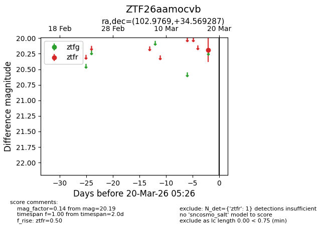
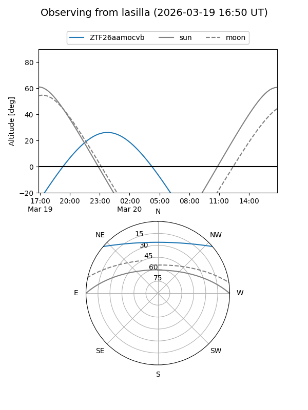
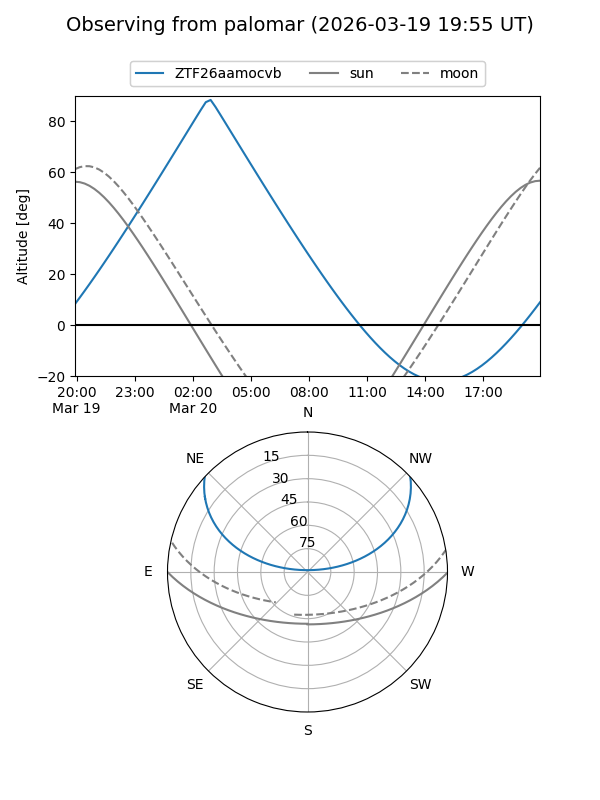

ZTF26aamocvb
Target ZTF26aamocvb at 2026-03-20 05:28
Aliases and brokers:
FINK: link
Lasair: link
ALeRCE: link
alt names
ZTF26aamocvb (ztf,fink_ztf)
Coordinates:
equatorial (ra, dec) = 102.9769,+34.56929
equatorial (HMS+DMS) = 06:51:54.46,+34:34:09.43
galactic (l, b) = (181.4518,+15.08362)
Flags:
Photometry:
last ztfr=20.19
1 ztfr detections
Lightcurve

Visibility


Additional plots